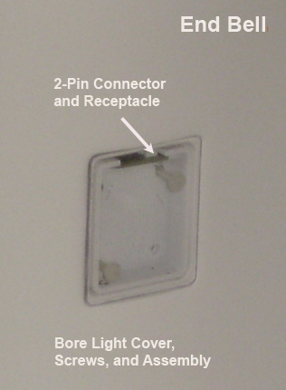
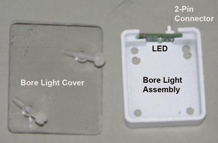

Operating Documentation
Direction 5670006, Rev# 1
Discovery MR750w GEM Service Methods
Module Version 5.0, Version Date 5/24/11
Operating Documentation |
| Required Persons | Preliminary Reqs | Procedure | Finalization |
|---|---|---|---|
| 1 | Not Applicable | 10 mins for Rear Bore Lights, 1.5 hours for Front Bore Lights (450w); 10 mins (450w GEM, 750w, and 750w GEM) | Not Applicable |
Use this procedure to replace the front and rear bore lights.
| Item | Qty | Effectivity | Part# | Manufacturer | |
|---|---|---|---|---|---|
| Non-Magnetic Service Tool Kit | 1 | - | 5112581 | - | |
Follow all lockout/tagout procedures by turning off the applicable breaker in the Power Distribution Unit (PDU) (see LOTO for RF and PEN Cabinets and Magnet Room Electronics).
Move the patient table away from the magnet.
Remove the two screws holding the Bore Light Cover to the Assembly and End Bell.
Illustration 1: Bore Light Receptacle

Illustration 2: Bore Light Cover and Assembly

FRONT BORE LIGHT: Carefully pull out the bottom of the Bore Light Assembly and slide the assembly downward to disconnect the 2-pin connector from the receptacle.
REAR BORE LIGHT: Carefully pull out the top of the Bore Light Assembly and slide the assembly upward to disconnect the 2-pin connector from the receptacle.
Insert the new Bore Light Assembly into the End Bell and 2-pin receptacle.
Reattach the Bore Light Cover to the Bore Light Assembly and End Bell using the two screws.
Press the bore light button on the Operator Control Panel to test the bore lights.